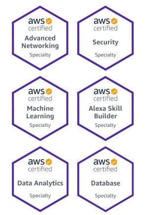

Technical AWS Cloud experience in the Specialty domain as specified in the exam guide.

There are six specialties available to you:
Advanced Networking - intended for individuals who perform complex networking tasks
Security Specialty - intended for individuals who perform a security role with at least two years of hands-on experience securing AWS workloads
Machine Learning Specialty - intended for individuals who perform a development or data science role. It validates a candidate's ability to design, implement, deploy, and maintain machine learning (ML) solutions for given business problems
Alexa Skill Builder Specialty - intended for individuals who perform a role as an Alexa skill builder. It validates a candidate’s ability to build, test, and publish Amazon Alexa skills
Data Analytics Specialty - Earn an industry-recognized credential from AWS that validates your expertise in AWS data lakes and analytics services. Build credibility and confidence by highlighting your ability to design, build, secure, and maintain analytics solutions on AWS that are efficient, cost-effective, and secure. Show you have breadth and depth in delivering insight from data
Database Specialty - Earn an industry-recognized credential from AWS that validates your expertise in the breadth of AWS database services and accelerating the use of database technology to drive your organization’s business transformation. Build credibility and confidence by highlighting your ability to design, recommend, and maintain the optimal AWS database solution for a use case
Most of the specialty exams are multiple choice, taken at a testing center or proctored online, approximately 170 minutes, and a cost of 300 USD.